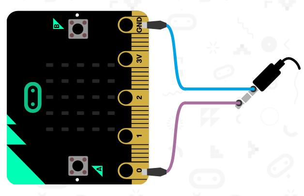
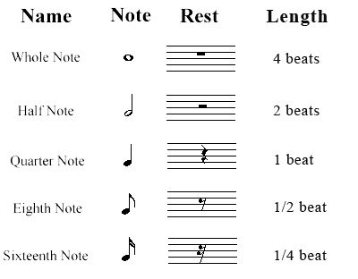
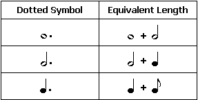
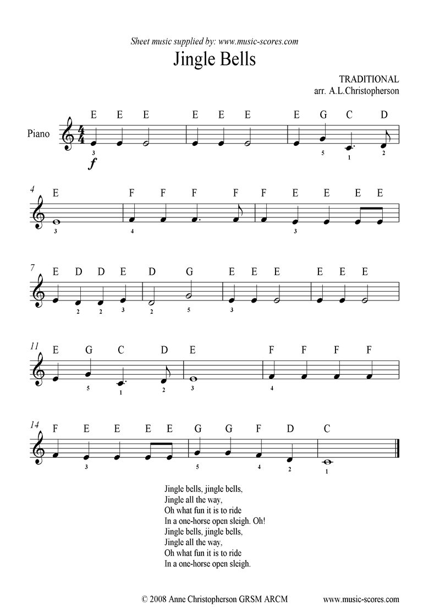

7. Zvuk¶

7.1. Predprogramovaná hudba¶
import music
music.play(music.NYAN)
- music - kinižnica na generovanie hudby na pine 0
- music.NYAN - prehrá melódiu NYAN
micro:bit už má niekoľko predprogramovaných melódií, tie nájdete v - dokumentácii (pozri Music)
7.2. Písanie vlastnej hudby¶
import music
tune = ["C4:4", "D", "E", "C", "C", "D", "E", "C", "E", "F", "G:8",
"E:4", "F", "G:8"]
music.play(tune)
- C4:4 - nota C zo štvrtej oktávy s dĺžkou 4
7.3. Rolničky na micro:bite¶
 

# Piesen Rolnicky
import music
tune = ["E:2", "E:2", "E:4", "E:2", "E:2", "E:4", "E:2", "G:2", "C:3", "D:1",
"E:8", ]
music.play(tune)
Úloha: Doplň celú pieseň a zmeň jej tóninu
7.4. Zvukové efekty¶
import music
music.pitch(400, 1000)
Prvým argumentom je frekvencia a druhým dĺžka prehrávania frekvencie.
Viac o tvorení zvukových efektov pomocou funkcie music.pitch() nájdeš v dokumentácii
7.5. Tvorba melódie¶
import music
music.pitch(400, 1000)
music.pitch(600, 1000)
music.pitch(800, 1000)
Úloha: Naprogramuj jednoduchý dvojtónový alarm ktorý sa po 5 sekundách vypne
7.6. Tvorba melódie cez cykly¶
import music
for freq in [400, 600, 800]:
music.pitch(freq, 1000)
import music
for freq in range(400, 1000, 200):
music.pitch(freq, 1000)
7.7. Obrátená melódia¶
import music
for freq in [800, 600, 400]:
music.pitch(freq, 1000)
import music
for freq in range(800, 200, -200):
music.pitch(freq, 1000)
7.8. Jemnejšia melódia¶
Teraz zmenšíme jednotlivé skoky vo frekvenciách a aj dĺžky prehrávania jednotlivých tónov
import music
while True:
for freq in range(880, 1760, 16):
music.pitch(freq, 6)
for freq in range(1760, 880, -16):
music.pitch(freq, 6)
Úloha: Naprogramuj policajnú sirénu (inšpiruj sa touto zvučkou)